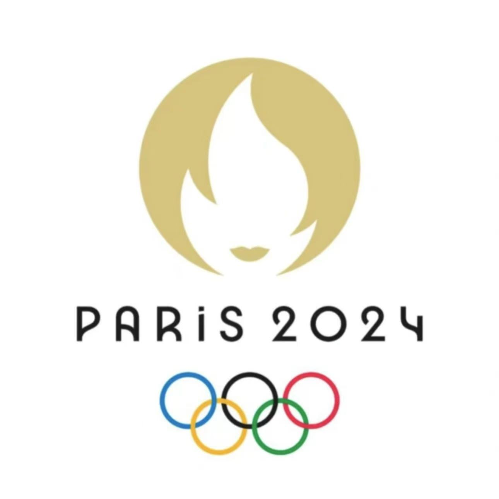
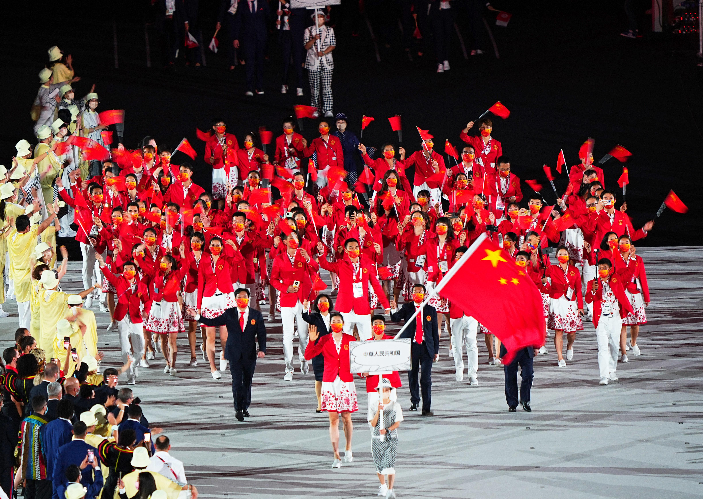

首页
奥运概况
闪耀时刻
资讯集锦
赛事直播
奥运概况

2024巴黎奥运会
2024年巴黎奥运会是第33届夏季奥林匹克运动会，将于2024年7月26日至8月11日在法国巴黎举行。本届奥运会的吉祥物是弗里热（Phryge），以法国传统弗里吉亚帽为设计灵感，象征着自由和法国大革命精神。
巴黎奥运会共设32个大项、329个小项，新增了霹雳舞、滑板、攀岩和冲浪等新兴项目。比赛将在巴黎及周边城市的35个场馆举行，包括埃菲尔铁塔、巴黎大皇宫等著名地标，展现了巴黎的历史与现代融合的城市风貌。
点击查看更多

中国代表队简介
2024年巴黎奥运会中国体育代表团总人数为716人，其中运动员405人，参加30个大项、42个分项、236个小项的比赛。代表团运动员平均年龄25岁，年龄最大的是田径运动员刘虹（37岁），年龄最小的是滑板运动员郑好好（11岁）。
本届代表团既有马龙、巩立姣等经验丰富的老将，也有众多首次参加奥运会的年轻选手。在备战过程中，代表团坚持科学训练，注重心理调节和伤病预防，力争在巴黎奥运会上取得优异成绩。
点击查看更多